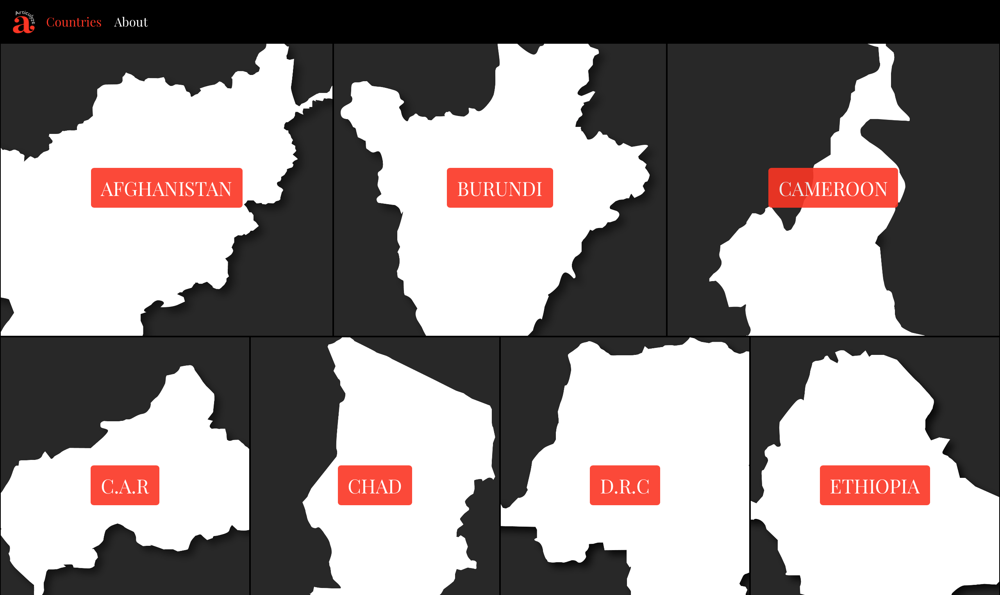
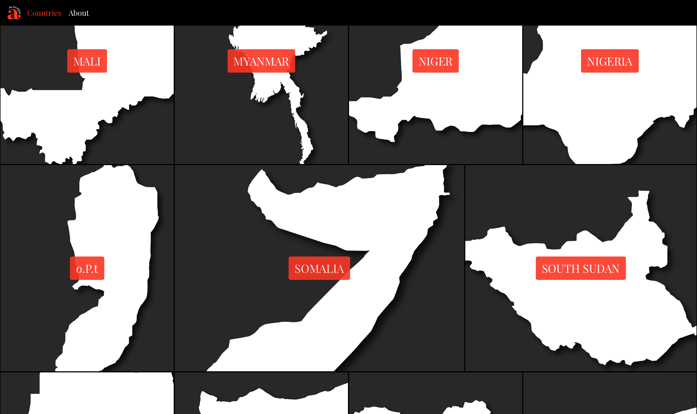
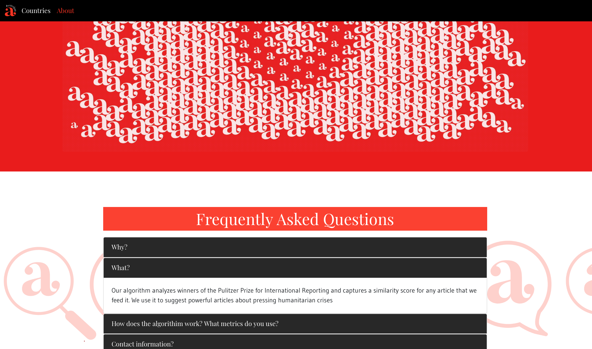

The website was designed to aggregate long-form, high-quality journalism about the world's most acute humanitarian crises, as defined by the UNOCHA's annual report. We thought that a reasonable approach to filtering for quality was ranking articles according to their similarity to ones that had won a Pulitzer Prize in International Reporting in the past. Powered by our naive algorithm, the website's content would update every week for a small but engaged community. For more information: [GitHub]